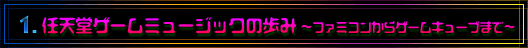
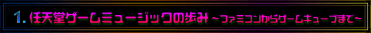

|  |
|  |
| 近藤 僕が入社したのがファミコンの出た次の年で、音楽専門のスタッフとしては、任天堂で初めての採用でした。 |
| −−どんな機材を使って音楽を作っていたんですか。 |
| 近藤 まだ、ちゃんとした機材がなくて、カシオトーンみたいなミニ鍵盤で作っていました。だいたいは、プログラムで音を出しながら、ゲームに曲をつけていたんです。 |
| −−それはパソコンみたいなものですか。 |
| 近藤 ファミコン用の開発機械ですね。その時は音楽の担当者が、サウンドのプログラムをすべてやっていたんです。当時は作曲で入社した人が、会社に入ってからプログラムを勉強して曲を作っていたんですよ。 |
| −−ファミコンは一度に出せる音が少なかったんですよね？ |
| 近藤 ええ。普通の音が３音と、ノイズですね。もうひとつデルタモジュレーションといって、『スーパーマリオ３』の時にパーカッションの音が出せるようになりました。でも、実際には、デルタモジュレーションは容量をすごく使うので、だいたい同時に鳴る音は３音の状態で作曲をしていました。 |
| −−曲がボツになったりすることもありましたか。 |
| 近藤 ゲームにあわせてみてあわなかったということもあります。画面ができて、動いているところを見てから作らないと、だいたいあわないですね。 |
| −−『スーパーマリオブラザーズ』の音楽はどんな風に作られたんですか。マリオがイタリア人だから、ラテン風の音楽になったんでしょうか？ |
| 近藤 そういうわけではありません。マリオの動きと明るい音楽というイメージで作ったら、たまたまラテンっぽくなったというだけなんですよ。ジャンルというよりは、いつもゲームミュージックという意識で作っています。最初は草原でマリオが走っている画面を見せられたんです。それで、ほのぼのした曲を作ったんですが、それがあわなくて、もっとアクションっぽいイメージで作り直しました。 |
| −−宮本（茂）さんの要求はありましたか。 |
| 近藤 ええ、効果音については厳しく言われましたね。「もう少しインパクトのある音を」とか言われました。つきっきりで「こう直してくれ、ああ直してくれ」と指示をもらって作っていましたね。曲に関しては、「こういう曲に」ということはなかったのですが、宮本はブルーグラスが好きなので、「この曲いいぞ」とレコードを持ってきたり、楽譜を持ってこられたりとかしました。 |
| −−さりげなく、自分の好きな曲をアピールしていたんでしょうか（笑）。 |
| 近藤 そうかもしれません。まだ、その時の楽譜は返していないんですけど（笑）。 |
| −−マリオの効果音などは、どうやって考えたんですか。 |
| 近藤 ファミコンは、方形波というクラリネットみたいな音しか出なかったんですよ。だから、それらしい音を作るのが難しかったです。あまり加工もできなかったので、音程の違う音を早く出したり、音を上げ下げして変化をつけていました。 |
| −−五線譜をひいて作曲をするというよりは、音の実験みたいですね。 |
| 近藤 そうですね。プログラムで音の変化を決めたり、そういった作業のほうが多かったです。いまでもそうなんですけど、容量に限りがあるので、いつもそのことを考えながら曲を作ったり、効果音を作ったりしていました。同じ音を出すにしても、より処理時間の少ないプログラムを組むように工夫しました。 |
| −−作ってみたけど、ゲームに入れきらなかったとか？ |
| 近藤 入らないから作り直すとか、ありましたね。 |
| −−たとえば、音楽の担当者が「こうやるとゲームはおもしろくなるよ」という提案をすることはありますか。 |
| 近藤 「こんなゲームにすればいい音がつけられるよ」という意見を出すことはないんですけど、「音からのアプローチがこんな風にできるから、こういう演出もできますよ」ということは言ったりしますね。 |
| −−作曲をするだけの仕事とは全然違いますね。 |
| 近藤 そうですね。やっぱりゲームがあって、音楽があるということですね。 |
| −−プログラムで曲を書くというのはやればできるようになるんですか。 |
| 近藤 本当のゲームプログラマみたいな数学の知識は必要ないので、やっていけばできるようになるんです。でも、やっぱりできない人もいますよね。音楽で入ってきても、数学的な能力がない人は苦労していたかもしれないですね。 |
| スーパーマリオブラザーズより地上BGM 担当：近藤浩治（455KB） |